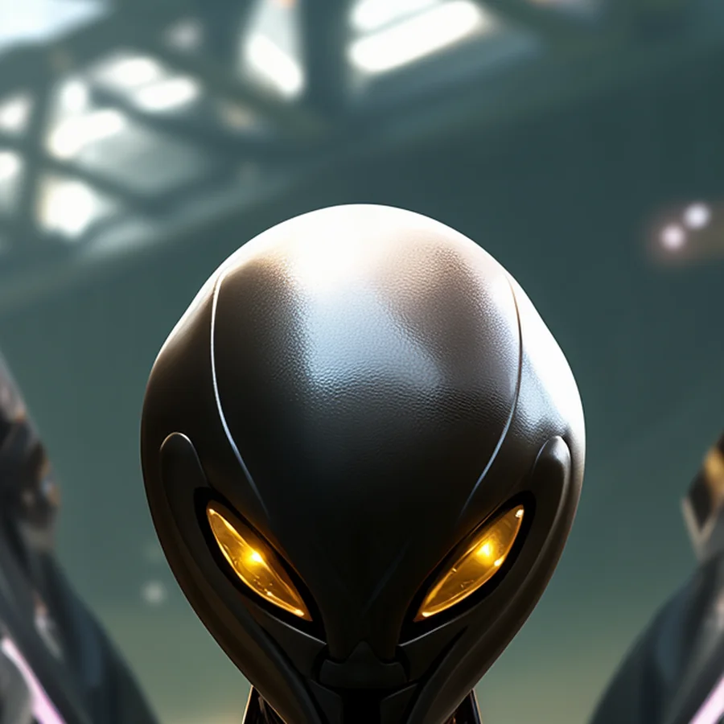

©
©

Zychron
Astral Nexus · Elite
Zychron announces the coming of the void, and then delivers it. The Abyss Surge floods the whole battlefield with void energy at once. The Nexus speaks through many pilots, but when Zychron speaks, all of them go quiet.